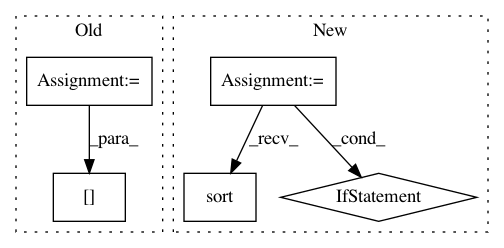

72f3f5bf50ed2d91cdcfbe2cf47120a2df8883cd,nilmtk/elecmeter.py,ElecMeter,_get_stat_from_cache_or_compute,#ElecMeter#Any#Any#Any#,415
Before Change
key_for_cached_stat = self.key_for_cached_stat(results_obj.name)
if loader_kwargs.get("preprocessing") is None:
cached_stat = self.get_cached_stat(key_for_cached_stat)
for section in sections:
try:
row = cached_stat.loc[section.start]
except KeyError:
sections_to_compute.append(section)
else:
end_time = row["end"]
if end_time == section.end:
usable_sections_from_cache = (
usable_sections_from_cache.append(row))
else:
sections_to_compute.append(section)
else:
sections_to_compute = sections
if not sections_to_compute:
After Change
results_obj.import_from_cache(cached_stat, sections)
// Get sections_to_compute
sections_to_compute = set(sections) - set(results_obj.timeframes())
sections_to_compute = list(sections_to_compute)
sections_to_compute.sort()
else:
sections_to_compute = sections
if not results_obj._data.empty:
print("Using cached result from metadata.")
// If we get to here then we have to compute some stats
if sections_to_compute:
loader_kwargs["sections"] = sections_to_compute
computed_result = self._compute_stat(nodes, loader_kwargs)
// Merge cached results with newly computed
results_obj.update(computed_result.results)
// Save to disk newly computed stats
self.store.append(key_for_cached_stat,
computed_result.results.export_to_cache())
return results_obj if full_results else results_obj.simple()
def _compute_stat(self, nodes, loader_kwargs):
In pattern: SUPERPATTERN
Frequency: 3
Non-data size: 5
Instances
Project Name: nilmtk/nilmtk
Commit Name: 72f3f5bf50ed2d91cdcfbe2cf47120a2df8883cd
Time: 2014-11-26
Author: jack-list@xlk.org.uk
File Name: nilmtk/elecmeter.py
Class Name: ElecMeter
Method Name: _get_stat_from_cache_or_compute
Project Name: biotite-dev/biotite
Commit Name: b44dc788d6eaf6fe53cb6468763b46a0c4c74a12
Time: 2020-12-22
Author: anter.jacob@gmail.com
File Name: src/biotite/structure/charges.py
Class Name:
Method Name: partial_charges
Project Name: QUANTAXIS/QUANTAXIS
Commit Name: f3384d39d6eac0b43452fe4b8b96795e37f14b06
Time: 2017-06-06
Author: yutiansut@qq.com
File Name: QUANTAXIS/QAARP/QAAccount.py
Class Name: QA_Account
Method Name: QA_account_update